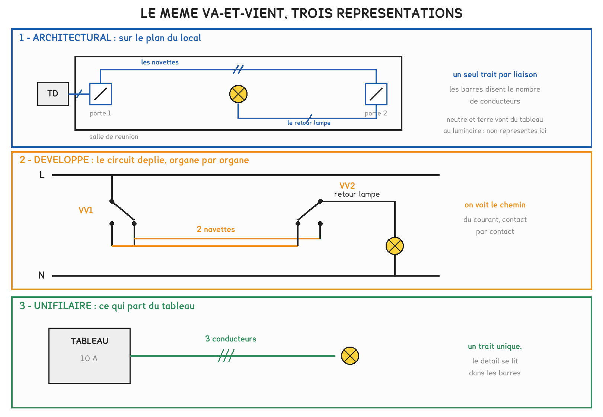

BTS FED option C · 1re année
Récapitulatif et approfondissements - Le soclesemaines 1 à 3
Trois semaines pour poser le vocabulaire de la chaîne, les trois façons de câbler, la lecture d'un dossier et l'analyse fonctionnelle ; côté atelier, l'appareil qu'on sort, le circuit qu'on contrôle hors tension et le système qu'on décrit avant de l'essayer. Cette page rassemble les règles, les pièges et deux outils, puis vous fait vérifier que tout est en place. Ce socle fait partie du devoir de la semaine 10.
2 outils · 10 questions · 8 exercices · 6 replis · 6 figures
Savoirs travaillés
Les règles de la séquence
| Ce que je cherche | Formule ou règle | Unités ou limite |
|---|---|---|
| La tension d’un bus KNX TP1 | 30 V continu, TBTS ; 21 V au moins chez chaque participant | en charge, autour de 29 V |
| Le courant d’une ligne | I = n × 10 mA | 64 participants au plus, 640 mA au plus |
| Ce qu’une ligne peut encore recevoir | courant de l’alimentation ÷ 10 mA, moins les participants déjà raccordés | un nombre entier de participants |
| Les trois longueurs d’une ligne | 350 m de l’alimentation au participant le plus éloigné ; 700 m entre deux participants ; 1 000 m de câble en tout | en mètres de câble posé, jamais à vol d’oiseau |
| La topologie d’une ligne | ligne, étoile, arbre ; jamais l’anneau | |
| L’Ethernet cuivre | 100 m au plus entre deux équipements actifs | 90 m de lien permanent et 10 m de cordons |
| Les ports d’un panneau | nombre de liens × (1 + réserve), arrondi à l’entier supérieur | la réserve est fixée par le CCTP |
| Un repère de borne | X1:5 désigne la borne 5 du bornier X1 | identique sur toutes les pièces du dossier |
| La précision d’un multimètre | ± x % de la lecture, ± n digits | le digit est le dernier chiffre affiché sur le calibre choisi |
| L’énergie économisée | E = P × t | P en kW et t en h donnent des kWh |
| Une temporisation de GRAFCET | T/X2 est vraie quand l’étape 2 est active depuis la durée T | T est un paramètre, pas un câblage |
Le bus ne se justifie pas par une économie de cuivre, mais par ce que l’on pourra y ajouter sans rouvrir un mur. Sur la salle de réunion de la semaine 1, le métré donne même l’avantage au câblage traditionnel.
Semaine 1 · les trois façons de câbler

En câblage traditionnel, le même fil porte l’information et l’énergie. Avec un télérupteur, l’énergie reste au tableau, mais la boucle de poussoirs reste en 230 V. Sur le bus, la paire ne porte plus que l’information, en 30 V continu, et ce qui s’ajoute ensuite se raccorde sur la paire déjà posée.
Les fabricants vendent des « actionneurs KNX ». Dans le vocabulaire du référentiel, ce sont des pré-actionneurs : l’actionneur est le luminaire ou le moteur, celui qui produit l’effet que le client voit. C’est ce vocabulaire qui fait foi le jour du devoir.
Le média se choisit sur trois questions, dans cet ordre : peut-on passer un câble, quelle distance, quel débit. Le bus filaire va au neuf, la radio à la rénovation occupée, le CPL là où le 230 V existe déjà, la fibre au-delà de 100 m ou en milieu perturbé, l’Ethernet cuivre aux caméras et à la supervision.
Une ligne KNX se vérifie sur trois longueurs et deux comptes, 64 participants et 640 mA. Les deux limites tombent ensemble : au-delà, on ne rallonge pas la ligne, on en crée une seconde, avec son coupleur et son alimentation.
Semaine 1 · l’atelier : choisir, consigner, repérer, noter

L’appareil se choisit d’après la grandeur cherchée, et non par habitude. Le multimètre ne mesure un courant qu’en ouvrant le circuit ; la pince le mesure sans rien ouvrir. Le moniteur de bus montre ce qui est envoyé, jamais ce qui est reçu.
Aucune mesure sur un circuit ouvert sans avoir vérifié l’absence de tension, et cette vérification se fait avec un appareil dont on a contrôlé le fonctionnement juste avant, puis juste après.
- Identifier l’ouvrage, et s’assurer qu’on travaille sur le bon.
- Séparer : ouvrir le dispositif de coupure.
- Condamner : verrouiller, poser la pancarte.
- Contrôler l’appareil de vérification sur une source connue.
- Vérifier l’absence de tension, puis contrôler de nouveau l’appareil.
« 29 » n’est pas un relevé. Sans unité, sans calibre et sans la précision de l’appareil, personne d’autre ne peut l’exploiter, et deux lectures ne se comparent pas : leur écart n’est significatif que s’il dépasse l’incertitude.
Le repérage se fait au moment où l’on tire le câble, aux deux extrémités, et le carnet de câbles reçoit aussitôt l’origine, la destination, la nature et la longueur. Un câble qui n’arrive nulle part s’inscrit quand même : c’est celui qu’on cherchera le jour de l’extension.
Semaine 2 · lire un dossier de courant faible
| La question | La pièce qui répond |
|---|---|
| Où se trouve l’appareil ? | le plan d’implantation |
| Qui est relié à qui, selon quelle topologie ? | le synoptique |
| Qu’est-ce qui part du tableau, protégé par quoi ? | le schéma unifilaire |
| Par où passe le courant, borne par borne ? | le schéma développé |
| Quels appareils, combien, sous quel repère ? | la nomenclature |
| D’où part ce câble, où arrive-t-il, quelle longueur ? | le carnet de câbles |
| Qu’exige le maître d’ouvrage ? | le CCTP |
Avant de chercher une information, choisir la pièce qui la contient. Le plan ne montre aucun câble, le synoptique ne respecte aucune distance : ce ne sont pas des défauts, chaque pièce a son rôle.
Sur un bus, aucun fil ne relie le poussoir au luminaire qu’il commande. Le câble renseigne sur la topologie ; seule la programmation renseigne sur la fonction, et elle se trouve dans le dossier de programmation, que l’intégrateur détient.
Quand deux pièces se contredisent, l’écart se signale au bureau d’études, se vérifie sur place, puis se fait corriger. Il ne se tranche pas au jugé. Un comptage n’est terminé que lorsqu’il se recoupe avec une autre pièce.
Semaine 2 · l’atelier : la référence 230 V

| La question qu’on se pose | Le schéma qui répond |
|---|---|
| Où sont les organes dans le local, où percer, où tirer ? | l’architectural |
| Par où passe le courant, contact par contact ? | le développé |
| Ce qui part du tableau, et combien de conducteurs ? | l’unifilaire, avec ses barres obliques |
On ne met pas sous tension pour voir. Le circuit se contrôle au multimètre, en continuité, hors tension, et la case attendue, continuité ou coupure, s’écrit avant de mesurer. Mettre sous tension pour voir n’est pas un essai, c’est un pari.
Les fils qui montent aux poussoirs d’un télérupteur ordinaire sont en 230 V, parce que sa bobine l’est. Seul le bus est en TBTS. Un circuit de commande n’est pas pour autant un circuit sans danger.
Le télérupteur déporte la commutation au tableau : un poussoir de plus, c’est deux fils piqués en parallèle sur la boucle. Un troisième point sur un va-et-vient demande un permutateur inséré entre les deux interrupteurs, et une gaine à rouvrir.
Semaine 3 · l’analyse fonctionnelle
Trois outils, trois questions. Ce que le système doit faire : la bête à cornes et les fonctions de service. Comment il le fait : les deux chaînes du schéma fonctionnel. Comment il se comporte dans le temps : le GRAFCET.
Une fonction se formule par un verbe à l’infinitif suivi de son complément, sans nommer la solution. « Éteindre l’éclairage de la salle inoccupée » est une fonction ; « posséder un détecteur de présence » décrit une solution.

| Famille de la semaine 1 | Fonction dans le schéma fonctionnel |
|---|---|
| capteur, organe de commande | acquérir |
| centrale, ou le programme de chaque participant | traiter |
| pré-actionneur | distribuer |
| actionneur | convertir |
| réducteur, axe, transmission | transmettre |
L’alimentation du bus n’appartient pas à la chaîne d’énergie : elle n’alimente aucun actionneur. Elle assure la fonction alimenter de la chaîne d’information, en 30 V continu.
T/X2 + ↑bp
- +: se lit OU
- ·: se lit ET
- ↑bp: front montant, l’instant de l’appui sur le poussoir
- T/X2: vraie quand l’étape 2 est active depuis la durée T
Une étape est une situation stable, à laquelle sont associées des actions. Une transition porte une réceptivité, la condition logique du passage à l’étape suivante.
Semaine 3 · l’atelier : relever et décrire
- Lister les organes, par leur nom exact, lu sur la plaque et non deviné à l’allure.
- Classer chacun dans sa famille : capteur, organe de commande, centrale, pré-actionneur, actionneur.
- Relier : l’information d’un côté, l’énergie de l’autre, et entourer les points de rencontre.
- Décrire chaque fonction en une phrase, au présent, sans nommer de marque.
- Prévoir ce que fera l’essai, essayer, puis corriger la description.
Les deux chaînes ne se rejoignent qu’aux pré-actionneurs. Une description n’est juste que si elle permet de prévoir le comportement, et la prévision s’écrit avant l’essai : c’est elle qui rend l’erreur visible.
Vous vérifier
- En câblage traditionnel, le même fil porte : l’information et l’énergie | l’information seulement | l’énergie seulement
- La boucle de poussoirs d’un télérupteur ordinaire est en : 230 V | 30 V continu | 12 V continu
- Dans la chaîne fonctionnelle, le variateur est : un pré-actionneur | un actionneur | un capteur
- Une ligne KNX porte au plus : 64 participants | 255 participants | 15 participants
- La topologie interdite sur une ligne KNX est : l’anneau | l’étoile | l’arbre
- L’origine et la destination d’un câble se lisent sur : le carnet de câbles | le plan d’implantation | la nomenclature
- La fonction d’un poussoir bus est fixée par : la programmation | le carnet de câbles | le schéma développé
- « Éteindre l’éclairage de la salle inoccupée » est : une fonction de service | une solution technique | un critère
- Un courant se mesure sans ouvrir le circuit avec : la pince ampèremétrique | le multimètre en série | le moniteur de bus
- Avant la mise sous tension, un circuit se contrôle : en continuité, hors tension | en mettant sous tension | au luxmètre
Pour aller plus loin
Pour aller plus loin
Pourquoi 30 V, et pourquoi 21 VPour aller plus loin›
L’alimentation d’une ligne délivre 30 V continu ; derrière sa self, en charge, le bus se mesure autour de 29 V. Un participant fonctionne tant qu’il reçoit au moins 21 V.
L’écart de 9 V est le budget que le câble consomme en chute de tension. C’est lui qui fixe la première des trois longueurs, les 350 m, calculée en semaines 4 et 5.
Ces tensions relèvent de la très basse tension de sécurité : on peut raccorder un participant sans couper le bus et sans risque de choc électrique. Rien de tel sur la boucle de poussoirs d’un télérupteur, qui est en 230 V.
Le télérupteur, à mi-chemin entre le fil et le busPour aller plus loin›
Le télérupteur sépare déjà la commande de la puissance : la puissance reste au tableau, les poussoirs ne portent que l’ordre. Mais cet ordre voyage encore sous forme d’énergie, 230 V dans une bobine, et chaque fonction demande sa propre boucle de fils.
Le bus fait un pas de plus. L’ordre devient un télégramme, une même paire sert à toutes les fonctions, et la correspondance entre une touche et une sortie n’est plus câblée mais programmée.
D’où les deux temps chronométrés en atelier : deux fils pour un quatrième poussoir de télérupteur, une gaine à rouvrir pour un troisième point de va-et-vient, et rien du tout sur un bus, si la paire passe déjà.
Centralisé ou décentralisé : deux architectures dans le même bâtimentBureau d'études›
En KNX, aucun appareil n’est une centrale. Chaque participant porte son programme d’application et décide seul à partir du télégramme qu’il reçoit : la fonction traiter est répartie. La panne d’un participant ne supprime que sa propre fonction.
Un automate à modules d’entrées-sorties fonctionne à l’inverse : tout remonte à l’unité centrale, qui décide de tout, et sa panne arrête la commande. En échange, une seule modification de programme change tout le comportement.
Les deux architectures coexistent dans un même bâtiment. Le bus pilote l’éclairage et les stores, l’automate pilote la chaufferie et la centrale de traitement d’air, et la supervision de GTB, étudiée en deuxième année, les réunit sur le réseau IP.
Ce que devient le dossier à la fin du chantierBureau d'études›
À la réception, l’installateur remet le dossier des ouvrages exécutés. Il reprend les pièces du dossier d’étude, mises à jour selon ce qui a réellement été posé : plans, synoptique, nomenclature, carnet de câbles, et les procès-verbaux d’essais.
Pour un bus, il doit contenir aussi le dossier de programmation : le fichier du projet de paramétrage et la liste des fonctions. Sans lui, la fonction d’un poussoir reste inconnue, et l’intégrateur suivant recommence tout.
Un dossier qui ne le contient pas est incomplet. On le réclame avant toute intervention sur les fonctions, jamais après.
Les règles d'évolution du GRAFCETPour aller plus loin›
Trois règles suffisent pour lire un graphe. À l’initialisation, les étapes initiales, à double cadre, sont actives. Une transition est validée quand toutes les étapes qui la précèdent sont actives ; elle est franchie quand elle est validée et que sa réceptivité est vraie.
Le franchissement active les étapes qui suivent et désactive celles qui précèdent, dans le même instant.
Le front montant ↑bp évite un piège : il est vrai à l’instant de l’appui, pas tant que le doigt reste posé. Sans lui, un appui un peu long ferait franchir deux transitions d’affilée, et la lumière s’éteindrait aussitôt allumée.
D'où viennent les digits d'un multimètrePour aller plus loin›
Une précision s’écrit ± x % de la lecture, ± n digits. Le pourcentage vient de la chaîne analogique de l’appareil ; les digits viennent du convertisseur, et un digit vaut le dernier chiffre affiché sur le calibre choisi.
Sur le calibre 200 V, ce dernier chiffre vaut 0,1 V : deux digits font 0,2 V. Sur le calibre 20 V, il vaut 0,01 V : deux digits ne font plus que 0,02 V. Le bon calibre est le plus petit qui contient la valeur.
Deux lectures ne sont différentes que si leurs encadrements ne se recouvrent pas. Une chute de 0,3 V mesurée avec deux encadrements de ± 0,35 V ne prouve rien : il faut charger davantage la ligne, ou changer de calibre.
S’entraîner
Les valeurs attendues ne sont pas dans la page : elle vous dit si c’est juste et vous rappelle la méthode. Le corrigé reste dans le polycopié.
Exercice · B8-1
Ce que la ligne peut encore recevoir
L’alimentation d’une ligne KNX délivre 640 mA. La nomenclature compte déjà 37 participants raccordés.
Combien de participants la ligne peut-elle encore recevoir ?
Exercice · B8-2
Ce que rapporte une détection
Un couloir compte 8 luminaires de 36 W. Le détecteur de présence évite 4 h d’éclairage inutile par jour, 250 jours par an.
Quelle énergie est économisée par an ?
Exercice · D2-1
Les deux participants les plus éloignés
Une ligne KNX TP1 : de l’alimentation à une boîte de répartition, 60 m ; de la boîte au bout de la branche A, 210 m ; de la boîte au bout de la branche B, 150 m.
Quelle longueur de câble sépare le participant du bout de la branche A de celui du bout de la branche B ?
Exercice · B8-1
Encadrer une lecture
Un multimètre affiche 29,3 V sur le calibre 200 V, dont le dernier chiffre vaut 0,1 V. Sa notice annonce ± 0,5 % de la lecture, ± 2 digits.
Quelle est la borne supérieure de l’encadrement de cette mesure ?
Exercice · C1-1
Le contact collé
La lampe d’un va-et-vient reste allumée quelle que soit la position des interrupteurs. Vous voulez savoir quel contact est collé.
Quel schéma ouvrez-vous ?
Exercice · B8-1
La famille du module
Un module sur rail DIN reçoit un télégramme sur la paire bus et ferme un contact 16 A vers un luminaire.
Dans quelle famille du référentiel le rangez-vous ?
Exercice · B8-1
L’alimentation du bus
Un camarade range l’alimentation du bus parmi les pré-actionneurs, « puisqu’elle fournit la puissance ». Lui expliquer en trois ou quatre lignes pourquoi elle n’en est pas un, et où elle se place.
- J’ai dit qu’un pré-actionneur reçoit un ordre et établit ou coupe la puissance vers un actionneur
- J’ai dit que l’alimentation du bus n’alimente aucun actionneur
- J’ai placé l’alimentation dans la chaîne d’information, fonction alimenter
- J’ai précisé sa tension et son domaine de sécurité
Exercice · D1-1
Le métré donne tort au bus
Sur la salle de réunion, le métré donne l’avantage au câblage en 230 V. Le client demande pourquoi vous proposez néanmoins le bus. Répondre en quatre lignes, avec un argument que le client peut vérifier lui-même.
- J’ai dit que le bus ne se justifie pas par l’économie de cuivre
- J’ai expliqué qu’un point de commande de plus se raccorde sur la paire déjà posée
- J’ai dit que la fonction se change par programmation, sans rouvrir un mur
- J’ai cité ce qui pourra s’ajouter plus tard, détecteur, horloge ou supervision
Le jour du contrôle
Ce socle fait partie du devoir surveillé É1 de la semaine 10, qui porte sur les semaines 1 à 9. Les questions qui s’y rapportent demandent moins de calcul que de vocabulaire exact et de lecture de dossier.
- Lire la question et repérer la pièce du dossier qu’elle vise, ou la famille de constituants qu’elle nomme.
- Employer les mots du référentiel : capteur, organe de commande, pré-actionneur, actionneur, jamais « la boîte grise ».
- Pour une ligne KNX, vérifier les cinq nombres : 64 participants, 640 mA, 350, 700 et 1 000 m, en mètres de câble.
- Pour une mesure, écrire la valeur, l’unité, l’appareil, le calibre et l’encadrement.
- Pour une fonction, un verbe à l’infinitif et son complément, sans nommer d’appareil.
| L’unité qui coûte des points | Ce qu’il faut faire |
|---|---|
| le courant d’une ligne | 10 mA par participant ; la somme s’écrit en mA, puis en A pour tout calcul |
| une longueur de ligne | en mètres de câble posé, tronçon par tronçon |
| une énergie | P en kW × t en h, résultat en kWh |
| une tension mesurée | la valeur suivie de son encadrement, en volts |
Une réponse rédigée tient en trois temps : la règle ou la formule en lettres, l’application avec les nombres et leurs unités, puis la conclusion en une phrase, qui répond à la question posée et non à une autre. Une justification sans le mot du référentiel n’est pas comptée juste.
Cette page ne remplace pas les polycopiés et ne donne aucun corrigé. Les outils démarrent sur des cas voisins de ceux des activités. Tous les calculs se font dans votre navigateur ; rien n'est enregistré.